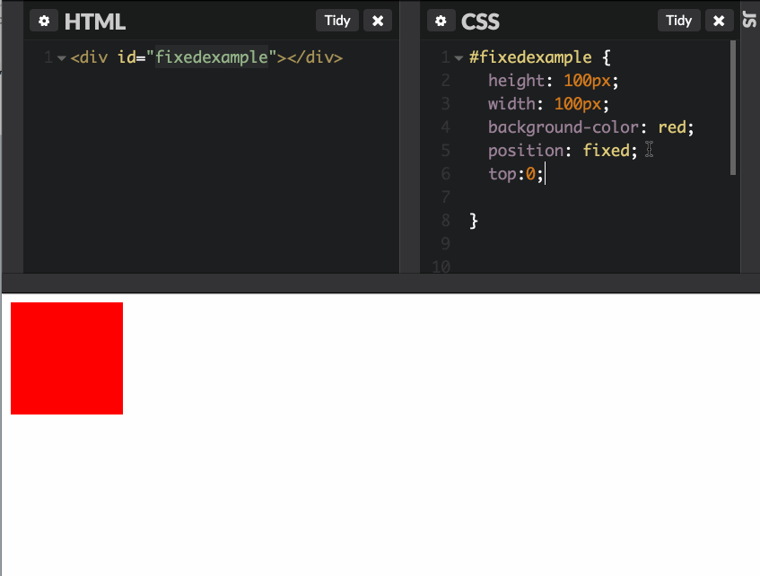

css tips - floating and positioning
1. With Fixed Positioning, You can move elements anywhere on the browser using left, top, bottom, right. Even if you scroll down, fixed element will stay put.

2. Use Absolute/Relative Positioning Go Together. Using top/bottom/left/right in the absolute positioned container are relative to the parent container.
3. Floating Items - Use floats to position block level elements to the left or right. Notice I made a mistake here, I put .box3 instead of #box3. Why should it use a #?
4. Using Clear. Use clear to reset the floats
What if you wanted this image in this div, thats larger than the text? Use overflow!
Using Margin to center elements. You have to use width here. Look what happens if you remove width:
Using Padding. Padding - Internal to the element (inside the border).
You can override default padding by using more specific attributes (left,right,bottom,top)
Margins Collapse! Collapsing margins happen when two margins come in contact with one another. If one margin is greater than the other, then that margin overrides the other, leaving one margin. Notice when I add margin-top to the .bottomdiv, nothing happens.
Layouts using Floats